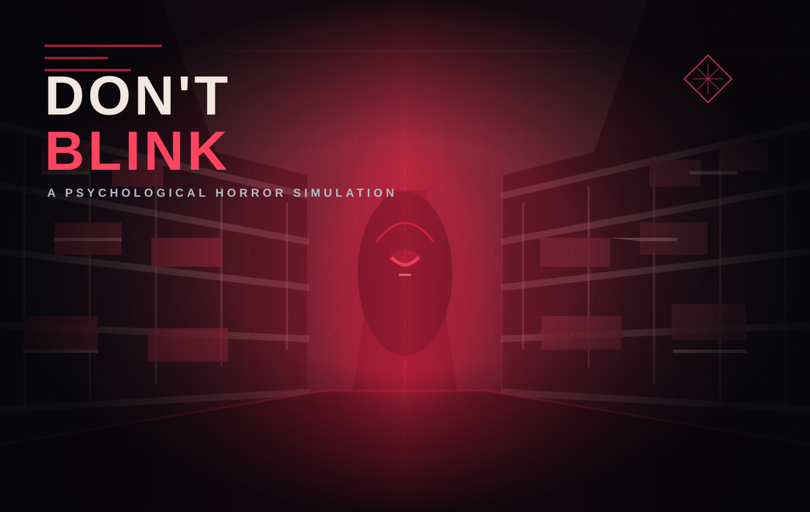

View game on itch.io4th Year Project · Psychological Horror
Don't Blink
Programming Lead & Technical Artist
A first-person psychological horror simulation set during supermarket shifts. Daytime retail tasks, insomnia, and a blinking mechanic build toward a surreal Nightmare Realm.
My Contributions
- Rebuilt the blinking mechanic and Nightmare transition, tuning gameplay-state changes to support the game's pacing and atmosphere.
- Contributed to the central event-progression system, which tracks task and objective progress and drives what happens next in the game.
- Designed and implemented level boundaries and colliders to keep player movement within the intended supermarket layout.
- Coordinated team tasks and checked work against gameplay needs; integrated assets, debugged and stabilized gameplay systems, and resolved Unity/GitHub collaboration issues.